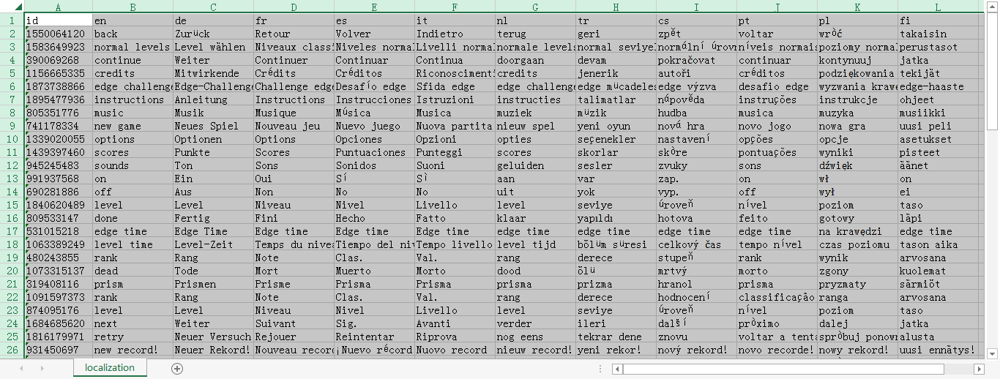

在 localization 文件夹内只有一个文件，那就是 text.loc，该文件允许你修改或翻译游戏中的文本。
Will Kirkby提供了该文件的格式并实现了一个读写 .loc 文件的类：https://github.com/WillKirkby/LibTwoTribes/blob/master/LibTwoTribes/LOC.cs
对于开发者，你同样可以用 EdgeTool 反编译、编译该文件来修改该文件。反编译后你会得到一个 text.xls 文件，这是一个标准的 Microsoft Excel 97-2003 工作表，你需要安装Microsoft Excel 97 或更高版本来打开这个文件。打开后如下图所示。

第一行是列头，其中第一列固定不变为id，后面几列分别为对应的语言ID。
下面每一行，第一列代表这一行文本的ID，请不要改动，后面几列分别为对应语言ID对应的文本。
你可以任意修改这个文件除第一列以外的任何部分，修改完毕后再次编译即可。
附表：EDGE 支持语言及其对应ID
| 语言 | ID |
|---|---|
| english | en |
| german | de |
| french | fr |
| spanish | es |
| italian | it |
| dutch | nl |
| korean | ko |
| schinese | zh |
| tchinese | zh |
| russian | ru |
| thai | th |
| japanese | ja |
| portuguese | pt |
| polish | pl |
| danish | da |
| finnish | fi |
| norwegian | no |
| swedish | sv |
| hungarian | hu |
| czech | cs |
| romanian | ro |
| turkish | tr |
| arabic | ar |
| brazilian | pt |
| bulgarian | bg |